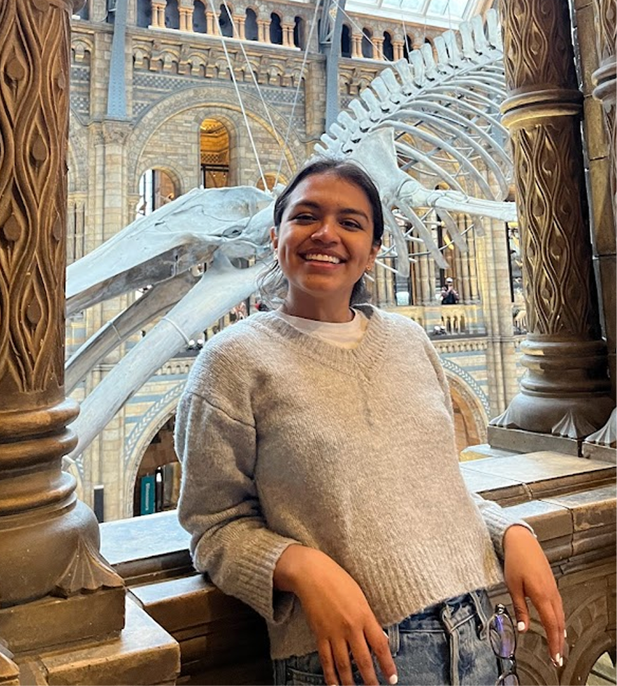

I believe good systems make room for creativity, not control it.

About me
I'm a Senior Design Operations professional at Electrolux Group, where I've spent the past 3+ years building and scaling the DesignOps function for global design teams.
My work spans resource allocation, budget management, workflow design, and cross-functional coordination — all in service of helping 30 designers across 50+ concurrent projects do their best work.
I came to DesignOps from an unusual path. I started in marketing and communications in Peru, moved to Stockholm for a university exchange, and discovered that the most impactful work happens at the intersection of strategy and execution. That background gives me a natural bridge between creative teams and business leadership.
I use a triple diamond design thinking framework (Understand → Create → Develop) to approach operational challenges. I'm data-driven (Power BI dashboards I built from scratch), collaborative (workshops and cross-functional rituals), and always looking for ways to improve how teams work together.
| From | Peru |
| Speak | Spanish, English, Portuguese, French |
| Secret talent | Know a lot about medicine & the human body |
| First jobs | Pharmacy helper (7 yrs), barista (18 yrs), competitive dancer |
| Love | My 5 rescued dogs & Tiramisu |
| Goals | Work for governments as a consultant |
What I do
Work
How I built DesignOps from scratch at Electrolux — from coordinator to senior ops leader over 3 years.
Read case study →Built a data-driven decision system from scratch for a 30-person design team managing 50+ projects.
Read case study →Introduced a structured submission process that replaced ad hoc efforts with a repeatable, quality-driven system.
Read case study →Led a review to identify capabilities and skill gaps across 5 design leads, informing hiring and staffing decisions.
Read case study →Directed research to refine brand positioning, establishing the first structured research program for the design org.
Read case study →Mapped actual workflows, facilitated workshops, and consolidated platforms to drive continuous improvement.
Read case study →Resume
3+ years of progressive DesignOps experience at Electrolux Group.
Business Administration & Marketing from UPC (top 20%). Exchange at Stockholm University.